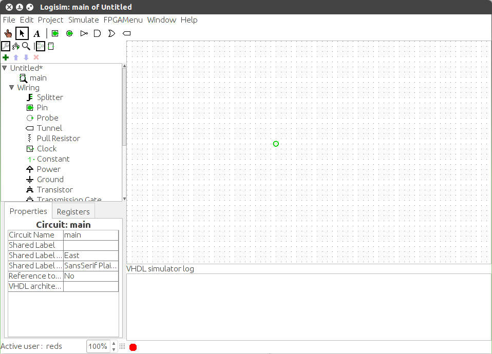

VHDL 模拟器
Logisim-evolution无法直接执行VHDL内容模拟。 相反，QuestaSim 被用作后台任务。
启用模拟器
您可以通过模拟 > VHDL 模拟启用菜单启用模拟器。 执行此操作时，模拟器控制台日志将显示在绘图窗格的底部。 在模拟器日志的底部栏，您可以看到模拟器状态指示器。 这些州是：

 禁用（控制台消失）
禁用（控制台消失）
 已启用（但未激活）
已启用（但未激活）
 开始
开始
 积极的
积极的
模拟器在启用且电路包含 VHDL 组件时自动启动。 当电路中没有任何 VHDL 组件时，无法启动模拟器。
Restart
重置 Logisim-evolution仿真时，VHDL仿真将重新启动。 这仅涉及模拟状态，它不会重新加载模拟（和源文件）。
如果您更改了某些 VHDL 组件的内容，则必须重新启动 VHDL 模拟器。 这永远不会自动完成。 您可以通过Simulate菜单重新启动模拟器。
Time
QuestaSim 仿真步骤时间必须被视为不可预测，因为它取决于电路中 VHDL 组件的数量。 绝对最小步长为 100ns。 因此，必须避免使用基于时间的模拟事件（例如等待10ns）。 您只能有基于信号的事件。
多个实例
实际上，您只能拥有一个 VHDL 模拟器实例。 这意味着如果您想在第二个项目上启用它，则必须在第一个项目上禁用它。 如果您尝试在两个项目上启用它，它将失败并显示错误消息。
下一节: 模拟测试台.